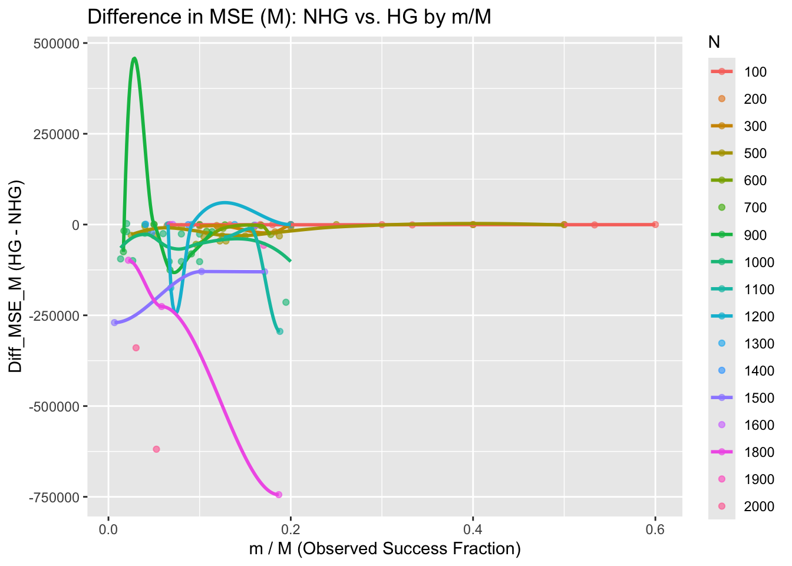
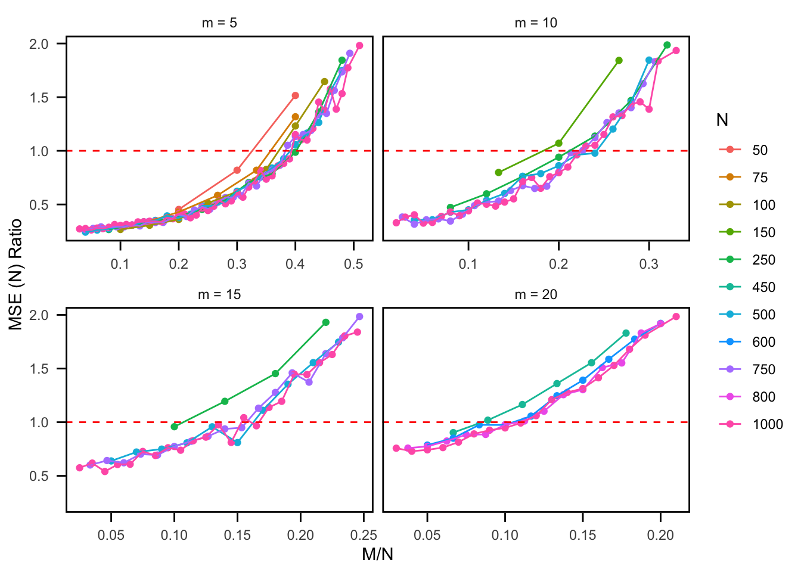
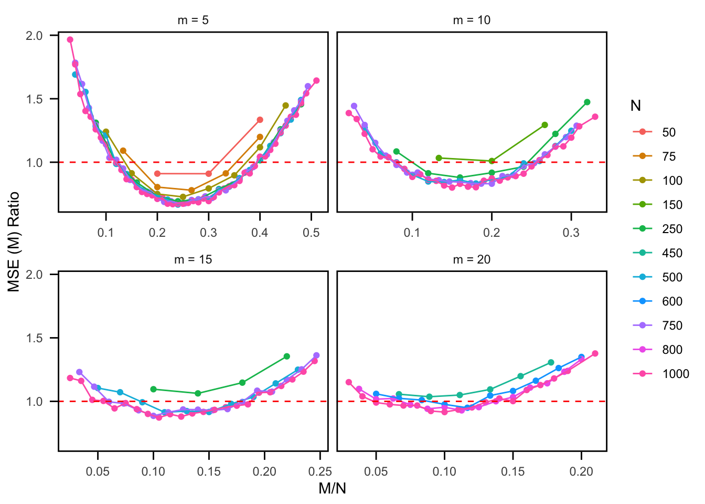

library(tidyverse)
library(extraDistr)NHG vs HG: Simulating Point Estimates
Set-Up
r_ngh <- function(num_obs, N, M, m) {
# m = # total successes (unknown) - (our notation: M)
m_pmf = M
# n = # total failures - (our notation: X = N - M)
n_pmf = N - m_pmf
# r = # fixed successes (our notation: m)
r_pmf = m
return(rnhyper(num_obs, m = m_pmf, n = n_pmf, r = r_pmf))
}Simulate Point Estimates (fix N, M, m)
Function
simulate_point_estimate_m <- function(simulations = 1000, true_N, true_M, m) {
# Initializing results data frame
results <- data.frame(sim = 1:simulations,
est_N_HG = numeric(simulations),
est_M_HG = numeric(simulations),
est_N_NHG = numeric(simulations),
est_M_NHG = numeric(simulations))
# Simulation loop
for (i in 1:simulations) {
# Sample from Negative Hypergeometric
x_NHG <- r_ngh(1, true_N, true_M, m) # Number of failures before m successes
n_NHG <- m + x_NHG # Total number of items sampled
# Sample from Hypergeometric
m_HG <- rhyper(1, true_M, true_N - true_M, n_NHG) # Number of successes observed
# Point estimates for Hypergeometric (handle cases where m_HG = 0 or NA)
if (is.na(m_HG) || m_HG == 0) {
est_N_HG <- NA
est_M_HG <- NA
} else {
est_N_HG <- (true_M * n_NHG) / m_HG
est_M_HG <- (true_N * m_HG) / n_NHG
}
# Point estimates for Negative Hypergeometric
est_N_NHG <- (true_M * n_NHG) / m
est_M_NHG <- (true_N * m) / n_NHG
# Store results
results[i, ] <- c(i, est_N_HG, est_M_HG, est_N_NHG, est_M_NHG)
}
# Calculate MSE for estimates
mse_N_HG <- mean((results$est_N_HG - true_N)^2, na.rm = TRUE)
mse_M_HG <- mean((results$est_M_HG - true_M)^2, na.rm = TRUE)
mse_N_NHG <- mean((results$est_N_NHG - true_N)^2, na.rm = TRUE)
mse_M_NHG <- mean((results$est_M_NHG - true_M)^2, na.rm = TRUE)
# Calculate MSE ratios
mse_N_ratio <- mse_N_NHG / mse_N_HG
mse_M_ratio <- mse_M_NHG / mse_M_HG
# Return results as a list
return(list(
MSE_Hypergeometric = list(N = mse_N_HG, M = mse_M_HG),
MSE_Negative_Hypergeometric = list(N = mse_N_NHG, M = mse_M_NHG),
MSE_ratio = list(mse_N_ratio = mse_N_ratio, mse_M_ratio = mse_M_ratio)
))
}Testing Function
set.seed(814)
true_N = 1000
true_M = 300
m = 20
results <- simulate_point_estimate_m(simulations = 10000, true_N, true_M, m)
cat("\nMSE for Hypergeometric estimates:\n")
MSE for Hypergeometric estimates:cat(sprintf("N: %.4f\n", results$MSE_Hypergeometric$N))N: 31371.3403cat(sprintf("M: %.4f\n", results$MSE_Hypergeometric$M))M: 2292.6486cat("\nMSE for Negative Hypergeometric estimates:\n")
MSE for Negative Hypergeometric estimates:cat(sprintf("N: %.4f\n", results$MSE_Negative_Hypergeometric$N))N: 122229.4375cat(sprintf("M: %.4f\n", results$MSE_Negative_Hypergeometric$M))M: 5237.8695cat("\nMSE Ratios:\n")
MSE Ratios:cat(sprintf("N: %.4f\n", results$MSE_ratio$mse_N_ratio))N: 3.8962cat(sprintf("M: %.4f\n", results$MSE_ratio$mse_M_ratio))M: 2.2846Simulating Combinations of N, M, and m
set.seed(814)
parameters <- data.frame(
N = c(
rep(100, 12),
rep(500, 15),
rep(1000, 15)
),
M = c(
rep(25, 3), rep(50, 4), rep(75, 5),
rep(100, 5), rep(250, 5), rep(400, 5),
rep(250, 5), rep(500, 5), rep(750, 5)
),
m = c(
5, 10, 15, 5, 10, 15, 25, 5, 10, 15, 25, 40,
5, 10, 25, 40, 50, 10, 20, 30, 40, 50, 10, 20, 50, 60, 75,
5, 10, 25, 40, 50, 10, 20, 30, 40, 50, 10, 20, 50, 60, 75
)
)
results_df <- data.frame()
for (i in 1:nrow(parameters)) {
true_N <- parameters$N[i]
true_M <- parameters$M[i]
m <- parameters$m[i]
result <- simulate_point_estimate_m(simulations = 10000,
true_N = true_N,
true_M = true_M,
m = m)
results_df <- rbind(
results_df,
data.frame(
N = true_N,
M = true_M,
m = m,
MSE_HG_N = result$MSE_Hypergeometric$N,
MSE_NHG_N = result$MSE_Negative_Hypergeometric$N,
Diff_MSE_N = result$MSE_Hypergeometric$N - result$MSE_Negative_Hypergeometric$N,
MSE_HG_M = result$MSE_Hypergeometric$M,
MSE_NHG_M = result$MSE_Negative_Hypergeometric$M,
Diff_MSE_M = result$MSE_Hypergeometric$M - result$MSE_Negative_Hypergeometric$M,
M_over_N = true_M / true_N,
m_over_M = m / true_M
)
)
}set.seed(814)
num_combinations <- 50
parameters <- data.frame(
N = sample(seq(100, 2000, by = 100), num_combinations, replace = TRUE),
M = NA,
m = NA
)
parameters$M <- sapply(parameters$N, function(N) sample(seq(10, N, by = 10), 1))
parameters$m <- sapply(parameters$M, function(M) sample(seq(5, M/5, by = 1), 1))
results_df_2 <- data.frame()
for (i in 1:nrow(parameters)) {
true_N <- parameters$N[i]
true_M <- parameters$M[i]
m <- parameters$m[i]
result <- simulate_point_estimate_m(simulations = 10000,
true_N = true_N,
true_M = true_M,
m = m)
results_df_2 <- rbind(
results_df_2,
data.frame(
N = true_N,
M = true_M,
m = m,
MSE_HG_N = result$MSE_Hypergeometric$N,
MSE_NHG_N = result$MSE_Negative_Hypergeometric$N,
Diff_MSE_N = result$MSE_Hypergeometric$N - result$MSE_Negative_Hypergeometric$N,
MSE_HG_M = result$MSE_Hypergeometric$M,
MSE_NHG_M = result$MSE_Negative_Hypergeometric$M,
Diff_MSE_M = result$MSE_Hypergeometric$M - result$MSE_Negative_Hypergeometric$M,
M_over_N = true_M / true_N,
m_over_M = m / true_M
)
)
}write.csv(results_df, file.path("/Users/rachelroggenkemper/Documents/NegativeHypergeometric/Simulation_Comparison", "comp_1.csv"), row.names = FALSE)
write.csv(results_df_2, file.path("/Users/rachelroggenkemper/Documents/NegativeHypergeometric/Simulation_Comparison", "comp_2.csv"), row.names = FALSE)Note: Difference (MSE) = HG - NHG
Diff > 0 (positive) -> HG > NHG = NHG performs better (lower MSE)
Diff < 0 (negative) -> HG < NHG = HG performs better (lower MSE)
Note: Ratio (MSE) = NHG / HG
Ratio > 1 -> HG < NHG = HG performs better (lower MSE)
Ratio < 1 -> HG > NHG = NHG performs better (lower MSE)
Observations and Trends
- Performance of NHG vs. HG for (N):
- NHG Performs Better (Positive Diff):
- When the difference is positive ((Diff_MSE_N > 0)), NHG has lower MSE. This is more likely when:
- (N) and (M) are large (e.g., (N > 500, M > 100)).
- The sampling fraction ((M / N)) is small, meaning the population of successes is sparse.
- (m) is small relative to (M) (e.g., (m / M < 0.5)), indicating fewer successes are observed relative to the total successes.
- When the difference is positive ((Diff_MSE_N > 0)), NHG has lower MSE. This is more likely when:
- HG Performs Better (Negative Diff):
- When the difference is negative ((Diff_MSE_N < 0)), HG has lower MSE. This happens when:
- (N) and (M) are small (e.g., (N < 500, M < 100)).
- The sampling fraction ((M / N)) is large, meaning the population of successes is denser.
- (m) is large relative to (M) (e.g., (m / M > 0.5)).
- When the difference is negative ((Diff_MSE_N < 0)), HG has lower MSE. This happens when:
- NHG Performs Better (Positive Diff):
- Performance of NHG vs. HG for (M):
- NHG Performs Better (Positive Diff):
- When the difference is positive ((Diff_MSE_M > 0)), NHG has lower MSE. This is observed when:
- (N) is large, and (M) is a small fraction of (N) (e.g., (M / N < 0.5)).
- The number of observed successes ((m)) is relatively small (e.g., (m / M < 0.5)).
- When the difference is positive ((Diff_MSE_M > 0)), NHG has lower MSE. This is observed when:
- HG Performs Better (Negative Diff):
- When the difference is negative ((Diff_MSE_M < 0)), HG has lower MSE. This occurs when:
- (m) is close to (M) (e.g., (m / M approximately = 1)).
- (M) is a large fraction of (N), and the population of successes is denser.
- When the difference is negative ((Diff_MSE_M < 0)), HG has lower MSE. This occurs when:
- NHG Performs Better (Positive Diff):
- Impact of the Ratio (M / N):
- NHG outperforms HG (positive difference) as (M / N) decreases, especially when (M) is a small proportion of the population size (N).
- HG performs better (negative difference) as (M / N) increases, meaning the population contains a higher density of successes.
- Impact of the Ratio (m / M):
- NHG performs better (positive difference) when (m / M) is small, as the Negative Hypergeometric distribution is specifically designed for cases where the number of successes ((m)) is fixed.
- HG performs better (negative difference) as (m / M) approaches 1, benefiting from its fixed sample size ((n)).
Summary Interpretation
- NHG excels in situations with:
- Large populations ((N)), sparse successes ((M / N) small), and smaller observed successes ((m / M) small).
- HG excels when:
- The population has a higher density of successes ((M / N) large), and the observed successes ((m / M)) are closer to the total successes.
Exploratory Data Analysis
results_df <- read_csv(here::here("Simulation_Comparison", "comp_1.csv"))
results_df_2 <- read_csv(here::here("Simulation_Comparison", "comp_2.csv"))
combined_results <- bind_rows(results_df, results_df_2)# Plot 1: Diff_MSE_N vs. M/N
ggplot(combined_results, aes(x = M_over_N, y = Diff_MSE_N, color = as.factor(N))) +
geom_point(alpha = 0.6) +
geom_smooth(method = "loess", se = FALSE) +
labs(
title = "Difference in MSE (N): NHG vs. HG by M/N",
x = "M / N (Success Fraction in Population)",
y = "Diff_MSE_N (HG - NHG)",
color = "N"
) ggplot(combined_results, aes(x = M_over_N, y = Diff_MSE_N, color = as.factor(N))) +
geom_point(alpha = 0.6) +
labs(
title = "Difference in MSE (N): NHG vs. HG by M/N",
x = "M / N (Success Fraction in Population)",
y = "Diff_MSE_N (HG - NHG)",
color = "N"
) # Plot 2: Diff_MSE_N vs. m/M
ggplot(combined_results, aes(x = m_over_M, y = Diff_MSE_N, color = as.factor(N))) +
geom_point(alpha = 0.6) +
geom_smooth(method = "loess", se = FALSE) +
labs(
title = "Difference in MSE (N): NHG vs. HG by m/M",
x = "m / M (Observed Success Fraction)",
y = "Diff_MSE_N (HG - NHG)",
color = "N"
) 
ggplot(combined_results, aes(x = m_over_M, y = Diff_MSE_N, color = as.factor(N))) +
geom_point(alpha = 0.6) +
labs(
title = "Difference in MSE (N): NHG vs. HG by m/M",
x = "m / M (Observed Success Fraction)",
y = "Diff_MSE_N (HG - NHG)",
color = "N"
) # Plot 3: Diff_MSE_M vs. M/N
ggplot(combined_results, aes(x = M_over_N, y = Diff_MSE_M, color = as.factor(N))) +
geom_point(alpha = 0.6) +
geom_smooth(method = "loess", se = FALSE) +
labs(
title = "Difference in MSE (M): NHG vs. HG by M/N",
x = "M / N (Success Fraction in Population)",
y = "Diff_MSE_M (HG - NHG)",
color = "N"
)ggplot(combined_results, aes(x = M_over_N, y = Diff_MSE_M, color = as.factor(N))) +
geom_point(alpha = 0.6) +
labs(
title = "Difference in MSE (M): NHG vs. HG by M/N",
x = "M / N (Success Fraction in Population)",
y = "Diff_MSE_M (HG - NHG)",
color = "N"
)# Plot 4: Diff_MSE_M vs. m/M
ggplot(combined_results, aes(x = m_over_M, y = Diff_MSE_M, color = as.factor(N))) +
geom_point(alpha = 0.6) +
geom_smooth(method = "loess", se = FALSE) +
labs(
title = "Difference in MSE (M): NHG vs. HG by m/M",
x = "m / M (Observed Success Fraction)",
y = "Diff_MSE_M (HG - NHG)",
color = "N"
) 
ggplot(combined_results, aes(x = m_over_M, y = Diff_MSE_M, color = as.factor(N))) +
geom_point(alpha = 0.6) +
labs(
title = "Difference in MSE (M): NHG vs. HG by m/M",
x = "m / M (Observed Success Fraction)",
y = "Diff_MSE_M (HG - NHG)",
color = "N"
) The Plot.
Simulating
set.seed(818)
# Create an empty data frame to store all simulation results
results_all <- data.frame()
# Number of simulations per combination
n_sim <- 10000
# Loop over each value of m and its corresponding N and M combinations
for (m_val in c(5, 10, 15, 20)) {
if (m_val == 5) {
N_vals <- c(50, 75, 100, 250, 500, 750, 1000)
for (N in N_vals) {
# Define M values based on N for m = 5
if (N == 50) {
M_vec <- seq(10, 30, by = 5)
} else if (N == 75) {
M_vec <- seq(10, 55, by = 5)
} else if (N == 100) {
M_vec <- seq(10, 60, by = 5)
} else if (N == 250) {
M_vec <- seq(10, 150, by = 10)
} else if (N == 500) {
M_vec <- seq(10, 300, by = 10)
} else if (N == 750) {
M_vec <- seq(10, 450, by = 10)
} else if (N == 1000) {
M_vec <- seq(10, 600, by = 10)
}
for (M in M_vec) {
# Run the simulation for the current combination
sim_out <- simulate_point_estimate_m(simulations = n_sim,
true_N = N,
true_M = M,
m = m_val)
# Append the simulation summary to the results data frame
results_all <- rbind(results_all,
data.frame(m = m_val,
true_N = N,
true_M = M,
mse_N_HG = sim_out$MSE_Hypergeometric$N,
mse_M_HG = sim_out$MSE_Hypergeometric$M,
mse_N_NHG = sim_out$MSE_Negative_Hypergeometric$N,
mse_M_NHG = sim_out$MSE_Negative_Hypergeometric$M,
mse_N_ratio = sim_out$MSE_ratio$mse_N_ratio,
mse_M_ratio = sim_out$MSE_ratio$mse_M_ratio))
}
}
} else if (m_val == 10) {
N_vals <- c(150, 250, 500, 750, 1000)
for (N in N_vals) {
# Define M values based on N for m = 10
if (N == 150) {
M_vec <- seq(20, 60, by = 10)
} else if (N == 250) {
M_vec <- seq(20, 150, by = 10)
} else if (N == 500) {
M_vec <- seq(20, 300, by = 10)
} else if (N == 750) {
M_vec <- seq(20, 450, by = 10)
} else if (N == 1000) {
M_vec <- seq(20, 600, by = 10)
}
for (M in M_vec) {
sim_out <- simulate_point_estimate_m(simulations = n_sim,
true_N = N,
true_M = M,
m = m_val)
results_all <- rbind(results_all,
data.frame(m = m_val,
true_N = N,
true_M = M,
mse_N_HG = sim_out$MSE_Hypergeometric$N,
mse_M_HG = sim_out$MSE_Hypergeometric$M,
mse_N_NHG = sim_out$MSE_Negative_Hypergeometric$N,
mse_M_NHG = sim_out$MSE_Negative_Hypergeometric$M,
mse_N_ratio = sim_out$MSE_ratio$mse_N_ratio,
mse_M_ratio = sim_out$MSE_ratio$mse_M_ratio))
}
}
} else if (m_val == 15) {
N_vals <- c(250, 500, 750, 1000)
for (N in N_vals) {
# Define M values based on N for m = 15
if (N == 250) {
M_vec <- seq(25, 100, by = 10)
} else if (N == 500) {
M_vec <- seq(25, 300, by = 10)
} else if (N == 750) {
M_vec <- seq(25, 450, by = 10)
} else if (N == 1000) {
M_vec <- seq(25, 600, by = 10)
}
for (M in M_vec) {
sim_out <- simulate_point_estimate_m(simulations = n_sim,
true_N = N,
true_M = M,
m = m_val)
results_all <- rbind(results_all,
data.frame(m = m_val,
true_N = N,
true_M = M,
mse_N_HG = sim_out$MSE_Hypergeometric$N,
mse_M_HG = sim_out$MSE_Hypergeometric$M,
mse_N_NHG = sim_out$MSE_Negative_Hypergeometric$N,
mse_M_NHG = sim_out$MSE_Negative_Hypergeometric$M,
mse_N_ratio = sim_out$MSE_ratio$mse_N_ratio,
mse_M_ratio = sim_out$MSE_ratio$mse_M_ratio))
}
}
} else if (m_val == 20) {
N_vals <- c(450, 600, 800, 1000)
for (N in N_vals) {
# Define M values based on N for m = 20
if (N == 450) {
M_vec <- seq(30, 150, by = 10)
} else if (N == 600) {
M_vec <- seq(30, 200, by = 10)
} else if (N == 800) {
M_vec <- seq(30, 250, by = 10)
} else if (N == 1000) {
M_vec <- seq(30, 300, by = 10)
}
for (M in M_vec) {
sim_out <- simulate_point_estimate_m(simulations = n_sim,
true_N = N,
true_M = M,
m = m_val)
results_all <- rbind(results_all,
data.frame(m = m_val,
true_N = N,
true_M = M,
mse_N_HG = sim_out$MSE_Hypergeometric$N,
mse_M_HG = sim_out$MSE_Hypergeometric$M,
mse_N_NHG = sim_out$MSE_Negative_Hypergeometric$N,
mse_M_NHG = sim_out$MSE_Negative_Hypergeometric$M,
mse_N_ratio = sim_out$MSE_ratio$mse_N_ratio,
mse_M_ratio = sim_out$MSE_ratio$mse_M_ratio))
}
}
}
}write.csv(results_all, file.path("/Users/rachelroggenkemper/Documents/NegativeHypergeometric/Simulation_Comparison", "point_estimate_simulation.csv"), row.names = FALSE)point_estimation_sim_df <- read_csv(here::here("Simulation_Comparison", "point_estimate_simulation.csv"))
point_estimation_sim_df <- point_estimation_sim_df %>%
mutate(M_over_N = true_M / true_N) %>%
filter(mse_N_ratio <= 2) %>%
filter(mse_M_ratio <= 2)MSE (N) Plot
ggplot(point_estimation_sim_df,
aes(x = M_over_N, y = mse_N_ratio,
color = factor(true_N), group = factor(true_N))) +
geom_point() +
geom_line() +
geom_hline(yintercept = 1, color = "red", linetype = "dashed") +
facet_wrap(~ m, scales = "free_x") +
labs(title = "MSE N Ratio by M/N",
x = "M/N",
y = "MSE N Ratio",
color = "True N") +
theme_minimal()
MSE (M) Plot
ggplot(point_estimation_sim_df,
aes(x = M_over_N, y = mse_M_ratio,
color = factor(true_N), group = factor(true_N))) +
geom_point() +
geom_line() +
geom_hline(yintercept = 1, color = "red", linetype = "dashed") +
facet_wrap(~ m, scales = "free_x") +
labs(title = "MSE M Ratio by M/N",
x = "M/N",
y = "MSE M Ratio",
color = "True N") +
theme_minimal()